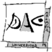
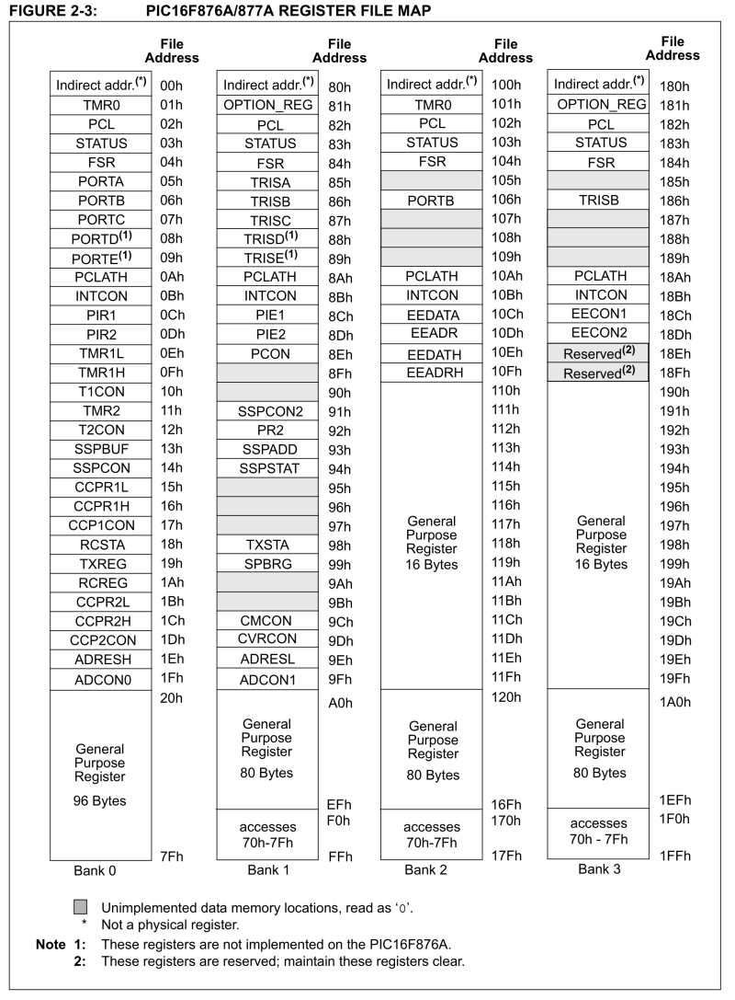

|
Ejercicio 1: E/S por programa (PIO)
mapeada en memoria
|
 |
El 16F877A usará los 8 bits del puerto paralelo de E/S B para controlar (encendiendo o apagando segmentos individuales) el valor representado en el Display 1 (el más a la izquierda) de la herramienta 7-Segment LED Display Panel, accesible desde el menú Tools del simulador.
En un sistema real el control del display se realizaría conectando físicamente cada segmento a una linea distinta del puerto de E/S; el segmento se enciende poniendo la línea a 1, y se apaga poniendo la linea a 0. En nuestro simulador estas conexiones físicas se emulan asignando segmentos y lineas en una herramienta de configuración; esta animación muestra cómo hacer esta asignación en un ejemplo que usa 3 displays y los tres puertos de 8 bits de E/S B, C y D.

Como el 16F877A usa E/S mapeada por memoria, los registros de datos de entrada o salida asociados al puerto B (es decir, los latches conectados a las lineas del puerto) se acceden a través d euna dirección de memoria, concretamente la 06hl. Para hacer más legible el código, el compilador BASIC permite usar un nombre simbólico (la variable especial PORTB) para referirse a esa posición de memoria.
Adicionalmente, el compilador permite referenciar individualmente cada bit del puerto B (de hecho, de cualquier registro con nombre). De esta forma, por ejemplo, la instrucción PORTB = 0 pone a 0 todas las lineas del puerto, mientras PORTB.0 = 1 pone a 1 la linea menos significativa del puerto (el bit 0, que encenderá el segmento "a").